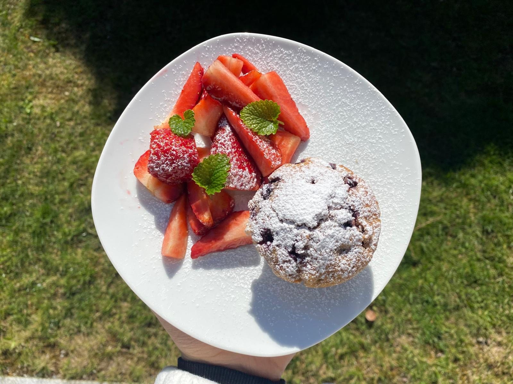

Blaubeermuffins
★
★
★
★
★

Zutaten (für 12 Muffins):
- 250g Mehl
- 2 TL Backpulver
- 1 Prise Salz
- 90g Zucker
- 1 Ei
- 125ml Milch
- 75g Butter
- 250g frische oder gefrorene Blaubeeren
- 1 TL Vanillezucker
Zubereitung:
- Backofen auf 180°C (Ober-/Unterhitze) vorheizen und Muffinform mit Papierförmchen auslegen.
- Mehl, Backpulver, Salz und Zucker in einer Schüssel vermischen.
- In einer zweiten Schüssel Ei, Milch, Butter und Vanillezucker verrühren.
- Flüssige Zutaten zu den trockenen geben und verrühren
- Blaubeeren vorsichtig unterheben.
- Teig in die Muffinförmchen füllen (ca. 3/4 voll) und ca. 25 Minuten backen.
- Abkühlen lassen und geniessen!
Guten Appetit!